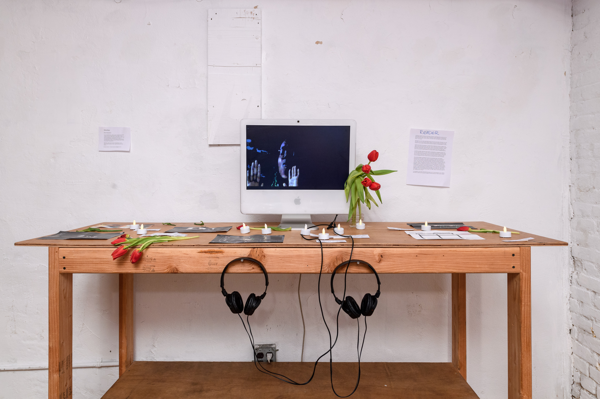
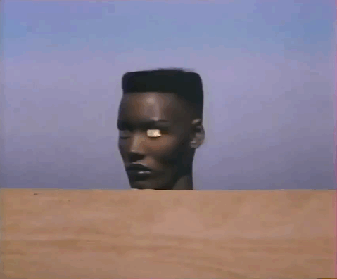
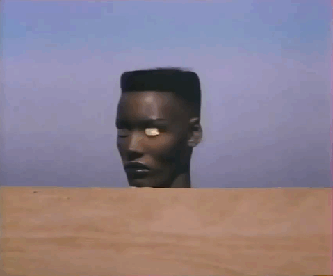

Olivia McKayla Ross (August 28, 2001–forever) is a Caribbean American video artist, programmer and poet from Queens, New York City. Her work is inspired by the relationship between electronic video and vanity--by deep fantasy, Instagram filters, glamour magic, mirrors and the fantasies and anxieties of video transmission: immersion, absorption, surveillance and control. How are faith and trust distributed between users and programmer? How is faith monopolized, accumulated, recycled, exchanged, embodied, assigned and weaponized between people, systems, ideals and materials? Emboldened by her perspective as a digital native, she hopes her work will encourage her fellow teens to nurture a critical relationship with technology.
She is a recent alum of the School for Poetic Computation and has taught at Black Girls Code, BUFU and POWRPLNT. Olivia is currently represented by talent development agency Scope of Work. Find her at cyber.doula on Instagram.
☞ Projects and Sketches ☞ Curriculum Vitae
Body Resolution
A lip-synced music video cover of Kate Bush’s 1979 video of her hit single Wuthering Heights using openFrameworks and GLSL, performed by me. How can two teenagers, separated by 50 years of sociopolitical context, technological advancement and the Atlantic Ocean, perform tenderness? What is my body’s resolution?
GLSL Sketches
Video musings using shaders and openFrameworks. Many of these can be found on Instagram.
 
